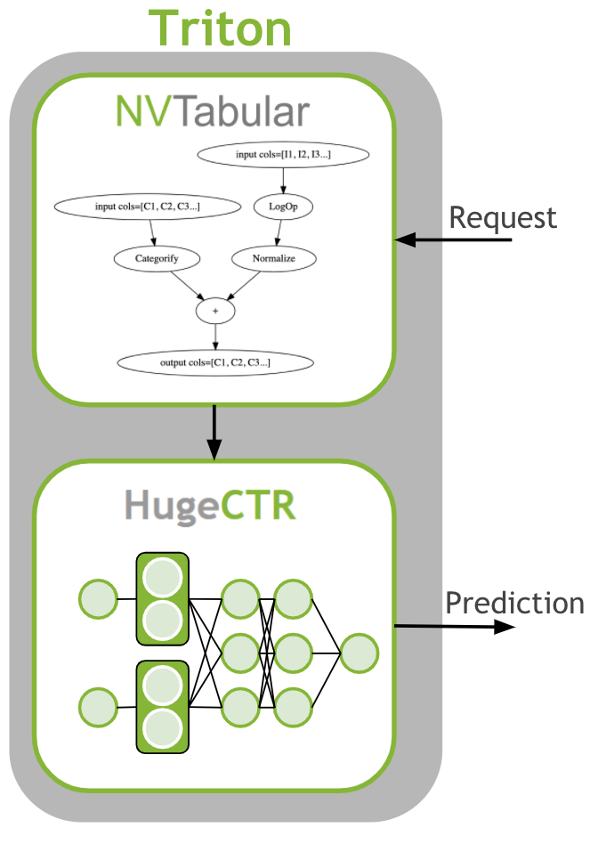

# Copyright 2021 NVIDIA Corporation. All Rights Reserved.
#
# Licensed under the Apache License, Version 2.0 (the "License");
# you may not use this file except in compliance with the License.
# You may obtain a copy of the License at
#
# http://www.apache.org/licenses/LICENSE-2.0
#
# Unless required by applicable law or agreed to in writing, software
# distributed under the License is distributed on an "AS IS" BASIS,
# WITHOUT WARRANTIES OR CONDITIONS OF ANY KIND, either express or implied.
# See the License for the specific language governing permissions and
# limitations under the License.
# ==============================================================================
# Each user is responsible for checking the content of datasets and the
# applicable licenses and determining if suitable for the intended use.
Scaling Criteo: Triton Inference with HugeCTR#
This notebook is created using the latest stable merlin-hugectr container.
Overview#
The last step is to deploy the ETL workflow and saved model to production. In the production setting, we want to transform the input data as during training (ETL). We need to apply the same mean/std for continuous features and use the same categorical mapping to convert the categories to continuous integer before we use the deep learning model for a prediction. Therefore, we deploy the NVTabular workflow with the HugeCTR model as an ensemble model to Triton Inference. The ensemble model guarantees that the same transformation are applied to the raw inputs.
{kind=link}
Learning objectives#
In this notebook, we learn how to deploy our models to production:
Use NVTabular to generate config and model files for Triton Inference Server
Deploy an ensemble of NVTabular workflow and HugeCTR model
Send example request to Triton Inference Server
Deploying Ensemble to Triton Inference Server#
First, we need to generate the Triton Inference Server configurations and save the models in the correct format. In the previous notebooks 02-ETL-with-NVTabular and 03-Training-with-HugeCTR we saved the NVTabular workflow and HugeCTR model to disk. We will load them.
After training terminates, we can see that two .model files are generated. We need to move them inside a temporary folder, like criteo_hugectr/1. Lets create these folders.
import os
import glob
import json
import numpy as np
import nvtabular as nvt
import tritonclient.grpc as grpcclient
from merlin.core.dispatch import get_lib
from merlin.systems.triton import convert_df_to_triton_input
from nvtabular.inference.triton import export_hugectr_ensemble
BASE_DIR = os.environ.get("BASE_DIR", "/raid/data/criteo")
OUTPUT_DATA_DIR = os.environ.get("OUTPUT_DATA_DIR", BASE_DIR + "/test_dask/output")
original_data_path = os.environ.get("INPUT_FOLDER", BASE_DIR + "/converted/criteo")
/usr/lib/python3/dist-packages/requests/__init__.py:89: RequestsDependencyWarning: urllib3 (1.26.12) or chardet (3.0.4) doesn't match a supported version!
warnings.warn("urllib3 ({}) or chardet ({}) doesn't match a supported "
Now we move our saved .model files inside 1 folder. We use only the last snapshot after 9600 iterations.
os.system("mv *9600.model " + os.path.join(OUTPUT_DATA_DIR, "criteo_hugectr/1/"))
We need to load the NVTabular workflow first
workflow = nvt.Workflow.load(os.path.join(OUTPUT_DATA_DIR, "workflow"))
Lets clear the directory
os.system("rm -rf " + os.path.join(OUTPUT_DATA_DIR, "model_inference"))
Export artifacts#
Now, we can save our models for use later during the inference stage. To do so we use export_hugectr_ensemble method below. With this method, we can generate the config.pbtxt files automatically for each model.
The script below creates an ensemble triton server model where
workflow is the the nvtabular workflow used in preprocessing,
hugectr_model_path is the HugeCTR model that should be served. This path includes the model files.
name is the base name of the various triton models.
output_path is the path where is model will be saved to.
cats are the categorical column names
conts are the continuous column names
hugectr_params = dict()
# Config File in the final directory for serving
hugectr_params["config"] = os.path.join(OUTPUT_DATA_DIR, "model_inference", "criteo/1/criteo.json")
hugectr_params["slots"] = 26
hugectr_params["max_nnz"] = 1
hugectr_params["embedding_vector_size"] = 128
hugectr_params["n_outputs"] = 1
export_hugectr_ensemble(
workflow=workflow,
# Current directory with model weights and config file
hugectr_model_path=os.path.join(OUTPUT_DATA_DIR, "criteo_hugectr/1/"),
hugectr_params=hugectr_params,
name="criteo",
# Base directory for serving
output_path=os.path.join(OUTPUT_DATA_DIR, "model_inference"),
label_columns=["label"],
cats=["C" + str(x) for x in range(1, 27)],
conts=["I" + str(x) for x in range(1, 14)],
max_batch_size=64,
)
We can take a look at the generated files.
!tree $OUTPUT_DATA_DIR/model_inference
/tmp/test_merlin_criteo_hugectr/output/criteo//model_inference
criteo
1
0_sparse_9600.model
emb_vector
key
slot_id
_dense_9600.model
_opt_dense_9600.model
criteo.json
config.pbtxt
criteo_ens
1
config.pbtxt
criteo_nvt
1
__pycache__
model.cpython-38.pyc
model.py
workflow
categories
unique.C1.parquet
unique.C10.parquet
unique.C11.parquet
unique.C12.parquet
unique.C13.parquet
unique.C14.parquet
unique.C15.parquet
unique.C16.parquet
unique.C17.parquet
unique.C18.parquet
unique.C19.parquet
unique.C2.parquet
unique.C20.parquet
unique.C21.parquet
unique.C22.parquet
unique.C23.parquet
unique.C24.parquet
unique.C25.parquet
unique.C26.parquet
unique.C3.parquet
unique.C4.parquet
unique.C5.parquet
unique.C6.parquet
unique.C7.parquet
unique.C8.parquet
unique.C9.parquet
metadata.json
workflow.pkl
config.pbtxt
ps.json
10 directories, 40 files
We need to write a configuration file with the stored model weights and model configuration.
config = json.dumps(
{
"supportlonglong": "true",
"models": [
{
"model": "criteo",
"sparse_files": [os.path.join(OUTPUT_DATA_DIR, "model_inference", "criteo/1/0_sparse_9600.model")],
"dense_file": os.path.join(OUTPUT_DATA_DIR, "model_inference", "criteo/1/_dense_9600.model"),
"network_file": os.path.join(OUTPUT_DATA_DIR, "model_inference", "criteo/1/criteo.json"),
"max_batch_size": "64",
"gpucache": "true",
"hit_rate_threshold": "0.9",
"gpucacheper": "0.5",
"num_of_worker_buffer_in_pool": "4",
"num_of_refresher_buffer_in_pool": "1",
"cache_refresh_percentage_per_iteration": 0.2,
"deployed_device_list": ["0"],
"default_value_for_each_table": ["0.0", "0.0"],
"maxnum_catfeature_query_per_table_per_sample": [2, 26],
"embedding_vecsize_per_table": [16 for x in range(26)],
}
],
}
)
config = json.loads(config)
with open(os.path.join(OUTPUT_DATA_DIR, "model_inference", "ps.json"), "w", encoding="utf-8") as f:
json.dump(config, f)
Start Triton Inference Server#
After we export the ensemble, we are ready to start the Triton Inference Server. The server is installed in the merlin-tensorflow-container. If you are not using one of our containers, then ensure it is installed in your environment. For more information, see the Triton Inference Server documentation.
You can start the server by running the following command:
tritonserver --model-repository=<output_path> --backend-config=hugectr,ps=<ps.json file>
For the --model-repository argument, specify the same value as os.path.join(OUTPUT_DATA_DIR, "model_inference" that you specified previously in export_hugectr_ensemble for output_path.
For ps= argument, specify the same value as os.path.join(OUTPUT_DATA_DIR, "model_inference", "ps.json) the file for ps.json.
print(os.path.join(OUTPUT_DATA_DIR, "model_inference"))
print(os.path.join(OUTPUT_DATA_DIR, "model_inference", "ps.json"))
/tmp/test_merlin_criteo_hugectr/output/criteo/model_inference
/tmp/test_merlin_criteo_hugectr/output/criteo/model_inference/ps.json
Get prediction from Triton Inference Server#
We have saved the models for Triton Inference Server. We started Triton Inference Server and the models are loaded. Now, we can send raw data as a request and receive the predictions.
We read 3 example rows from the last parquet file from the raw data. We drop the target column, label, from the dataframe, as the information is not available at inference time.
df_lib = get_lib()
input_cols = workflow.input_schema.column_names
# read in data for request
data = df_lib.read_parquet(
os.path.join(sorted(glob.glob(original_data_path + "/*.parquet"))[-1]),
columns=input_cols
)
batch = data[:3]
batch = batch[[x for x in batch.columns if x not in ['label']]]
batch
| C1 | C2 | C3 | C4 | C5 | C6 | C7 | C8 | C9 | C10 | ... | I4 | I5 | I6 | I7 | I8 | I9 | I10 | I11 | I12 | I13 | |
|---|---|---|---|---|---|---|---|---|---|---|---|---|---|---|---|---|---|---|---|---|---|
| 70000 | 2714039 | 29401 | 11464 | 1122 | 9355 | 2 | 6370 | 1010 | 37 | 1865651 | ... | 0.208215 | 0.952671 | 0.955872 | 0.944922 | 0.139380 | 0.994092 | 0.056103 | 0.547473 | 0.709442 | 0.930728 |
| 70001 | 3514299 | 27259 | 8072 | 395 | 9361 | 1 | 544 | 862 | 11 | 3292987 | ... | 0.171709 | 0.759526 | 0.795019 | 0.716366 | 0.134964 | 0.516737 | 0.065577 | 0.129782 | 0.471361 | 0.386101 |
| 70002 | 1304577 | 5287 | 7367 | 2033 | 2899 | 2 | 712 | 640 | 36 | 6415968 | ... | 0.880028 | 0.347701 | 0.207892 | 0.753950 | 0.371013 | 0.759502 | 0.201477 | 0.192447 | 0.085893 | 0.957961 |
3 rows 39 columns
We generate a Triton Inference Server request object.
Currently, NA and None values are not supported for int32 columns. As a workaround, we will NA values with 0. The output of the HugeCTR model is called OUTPUT0. For the same reason of dropping the target column, we need to remove it from the input schema, as well.
input_schema = workflow.input_schema.remove_col('label')
inputs = convert_df_to_triton_input(
input_schema,
batch.fillna(0),
grpcclient.InferInput
)
output_cols = ['OUTPUT0']
outputs = [
grpcclient.InferRequestedOutput(col)
for col in output_cols
]
We send the request to Triton Inference Server.
# send request to tritonserver
with grpcclient.InferenceServerClient("localhost:8001") as client:
response = client.infer("criteo_ens", inputs, request_id="1", outputs=outputs)
We print out the predictions. The outputs are the probability scores, predicted by our model, how likely the ad will be clicked.
for col in output_cols:
print(col, response[col], response[col].shape)
OUTPUT0 [0.52164096 0.50390565 0.4957397 ] (3,)
Summary#
In this example, we deployed a recommender system pipeline as an ensemble. First, NVTabular created features and afterwards, HugeCTR predicted the processed data. This process ensures that the training and production environments use the same feature engineering.
Next steps#
There is more detailed information in the API documentation and more examples in the HugeCTR repository.